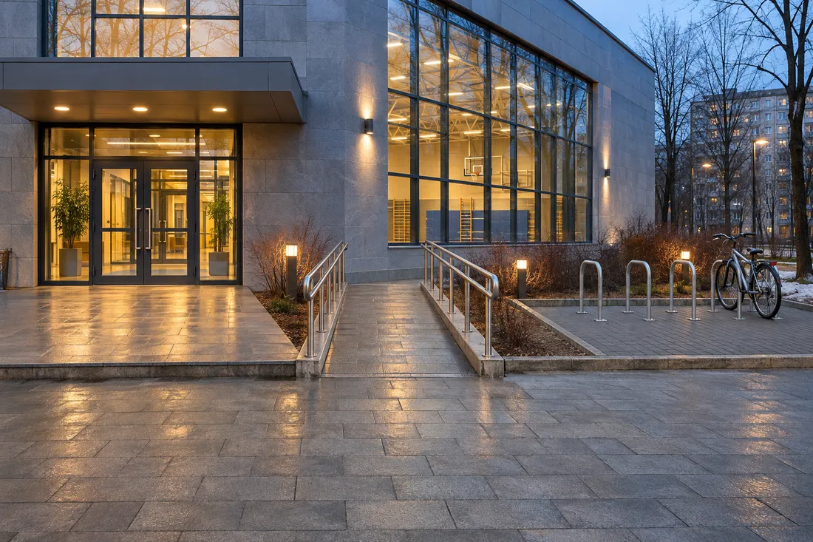

По тротуару мимо двора
Ты подъезжаешь к арке справа. Сейчас перед тобой свободно, но из-за фургона не видно, что во дворе. Как ты поступишь?
«Подвези до входа»
У спортцентра тебя догоняет приятель. До тренировки две минуты. Твой самокат рассчитан на одного.
«Подвезёшь меня до входа? А то пешком я к началу не успею»
Что ответишь?
Где оставить самокат?
Ты у спортцентра. Перед тренировкой осталось припарковать самокат. Выбери место на картинке.
